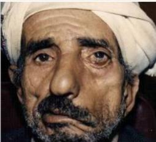

Part I · Ectropion
Senile (involutional) ectropion
Most common type
- Usually affects the lower lid, due to gravity with redundant skin.
Pathogenesis
It has the same pathogenesis as involutional entropion; however, the lower eyelid here is well supported by the globe, so it rolls outwards instead of inwards.
Lines of treatment
- Mild cases: cautery puncture (conjunctival side) to form a scar that everts the lid margin inwards.
- Moderate cases: Snellen’s sutures.
- Severe cases: Dimmer’s modification of the Kuhnt operation.
